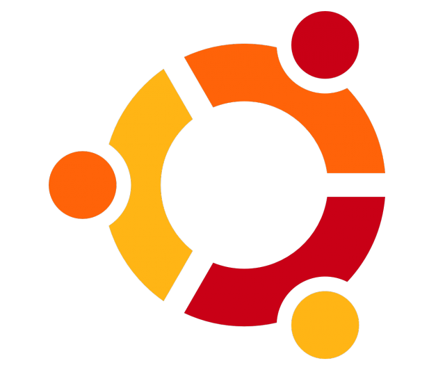

Las Distribuciones más Famosas y sus Diferencias
| Distro |
Descripción |
Diferencias |
Debian |
Una de las distros más antiguas y respetadas. |
Su enfoque es la estabilidad absoluta.
Prefieren software viejo pero que nunca falle. |

Ubuntu |
Basada en Debian, es la más popular del mundo. |
Su meta es la facilidad de uso.
Ideal para principiantes porque "todo funciona"
al instalar. |
Arch Linux |
Una distro minimalista donde tú instalas todo desde cero. |
El usuario tiene control total.
No trae nada preinstalado,
tú construyes tu propio sistema. |
Fedora |
Respaldada por Red Hat |
Es el campo de pruebas de tecnologías nuevas.
Si algo es innovador en Linux,
sale primero en Fedora. |
Linux Mint |
Basada en Ubuntu, con un look clásico. |
Perfecta para quienes vienen de Windows,
ya que su interfaz es muy similar y familiar. |

Kali Linux |
La navaja suiza de la ciberseguridad. |
No es para uso diario.
Viene con cientos de herramientas preinstaladas
para pruebas de penetración y hacking ético. |
Lubuntu |
Versión ligera de Ubuntu con escritorio LXQt. |
Su mínimo consumo de recursos.
Es la mejor opción para que computadoras
viejas vuelvan a ser rápidas. |